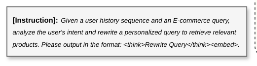

Think-to-Personalize: Unifying Reasoning and Retrieval for User-Centric Personalized Dense Retrieval (思考即个性化：统一推理与检索的用户中心个性化稠密检索)
- 会议/期刊: CIKM 2026
- 作者与机构: Angqing Jiang, Gaoming Zhang, Defu Lian (USTC)；Jianchun Song, Kena Qi, Dayao Chen, Wei Lin (美团)
- 推荐链路定位: 召回（个性化稠密召回通道）
- 研究方向: 大语言模型推荐 / 协同过滤与双塔召回
- 论文原文: https://arxiv.org/abs/2608.18855v2
- 开源代码: https://github.com/PhilipGAQ/ttp
TL;DR (1分钟核心速览)
本地生活电商的查询稀疏且歧义（"Thai"、"Luck"），存在查询字面与用户潜在意图之间的 intent gap；现有 LLM 稠密检索仍是 query-centric，个性化方法又只做隐式 embedding 交互、缺乏显式推理，而 rewrite-then-retrieve 流水线中重写器与检索器目标错位。TTP 让 LLM 在用户历史订单上显式推理并生成 intent-enhanced query，与物品共享同一编码器输出统一 embedding，再用 SFT + GRPO 两阶段把推理过程与检索效用对齐。在自研四测试集与 KuaiSearch/Amazon 上全指标 SOTA，Broad 集 Recall@20 相对 Qwen-Embedding 提升 +7.47%，线上 7 天 A/B 订单量 +0.46%。
Background & Motivation (背景与核心矛盾)
- 主流范式: 稠密检索已从 BERT 双塔（DPR/BGE）演进到 LLM embedding（NV-Embed、Qwen3-Embedding），近期 Search-R3、LREM 开始让 LLM 先"想"再编码；个性化侧则以 UIA、MAPs 等隐式序列建模或 PBR/CoPS 式外挂重写器为主。
- 前人局限: ① query-centric 推理只扩展查询表面语义，无法利用用户历史弥合歧义；② 隐式 embedding 交互在噪声历史下缺乏显式消歧能力；③ 解耦流水线中重写器按因果语言建模优化，与下游检索目标不对齐，生成理由与召回效果脱节。
- 核心洞察 (Key Insight): 在本地生活场景，宽泛/长尾查询的潜在意图本就藏在用户历史购买序列里（如搜"Thai"而历史全是按摩温泉），显式推理比隐式匹配更能从噪声历史中抽取信号。
- 本文切入点: 把推理范围从 query 扩展到 (user, query) 对，并将推理生成与稠密编码放进同一个 LLM、同一个 ，端到端联合优化。
Method (核心方法设计)
1. 整体框架 (Overall Architecture)
输入构造为 [INST] ⊕ I_task ⊕ H_u ⊕ q ⊕ [/INST]，模型先输出 <think> r </think> 的意图增强查询 \(r\)，再输出 <embed> 特殊 token，取其最后一层隐状态作为查询向量\(e_q\)；物品侧序列化元数据后追加同一 <embed> token，用共享编码器得\(e_i\)，打分\(s(q,i)=e_q^\top e_i\)。训练分两阶段：Stage 1 用 NTP + InfoNCE 联合损失做冷启动 SFT；Stage 2 用 GRPO 配合检索感知奖励与动态正样本选择，把生成推理对齐到召回效用。线上则以 T+1 个性化缓存 + 305M 蒸馏双塔承接实时流量。
flowchart TD
A["用户历史 H_u + 当前查询 q + 指令"] --> B["LLM 生成 <think>意图增强查询 r</think>"]
B --> C["<embed> 隐状态 → 查询向量 e_q"]
A2["物品元数据 + <embed>"] --> C2["共享编码器 → 物品向量 e_i"]
C --> D["内积打分 / ANN 召回"]
C2 --> D
D --> E["Stage1: NTP+InfoNCE 冷启动"]
D --> F["Stage2: GRPO 检索奖励对齐 + 动态正样本"]
2. 关键设计拆解 (Key Designs)
-
意图增强查询的统一编码（Intent-Enhanced Query）：痛点是 query-centric 编码丢失历史语境、解耦重写器与检索器目标错位 \(\to\)让推理文本与查询共享同一
<embed>表征，检索梯度可直接回传到生成侧\(\to\) 物理直觉是"推理即查询扩展，但扩展结果落在检索空间里"，避免重写语义漂移。 -
检索感知的复合奖励 + 动态正样本选择：GRPO rollout 常产出噪声重写，随机选正样本会污染对比学习 \(\to\) 奖励设计为 $\(R=\lambda_{fmt}R_{format}+\lambda_{len}R_{length}+\lambda_{ret}\big[\alpha\Delta S_{pos}+\beta\Delta S_{margin}\big]\)$ 其中 \(\Delta S_{pos}=s(q',i^+)-s(q,i^+)\)，\(\Delta S_{margin}\)为相对负样本均值的 margin 增益，并裁剪到\([-1,1]\)；对比学习正样本取组内\(y^*=\arg\max_{y_i}R_{retrieval}(y_i)\)，若\(R_{retrieval}(y^*)\le 0\)则回退原查询\(q\)。关键在于奖励模型冻结为 SFT 模型，作为稳定语义锚点防止 reward hacking。
-
训练目标、负采样与推理效率：Stage 1 为 \(\mathcal{L}_{Stage1}=\lambda_{gen}\mathcal{L}_{gen}+\mathcal{L}_{cl}\)（\(\lambda_{gen}=0.5\)，\(\tau=0.02\)）；Stage 2 为\(\mathcal{L}_{Stage2}=\mathcal{L}_{GRPO}+\lambda_{cl}\mathcal{L}_{cl}\)（\(\lambda_{cl}=0.1\)）。全部对比目标使用 in-batch negatives，无额外难负采样。骨干 Qwen2.5-3B-Instruct + LoRA(r=16)，embedding 维 2048，GRPO group size 8。推理侧靠 T+1 缓存（覆盖 10.59% QV）与 305M 蒸馏双塔（联合优化\(\langle q,p^+\rangle\)、\(\langle q_r,p^+\rangle\)、\(\langle q,q_r\rangle\) 三目标）压延迟。
Experimental Setup & Evaluation Protocol (实验设置与评估协议)
- 数据集与预处理: 自研四测试集来自真实日志，历史为过去一年购买记录，超长历史用
bge-reranker-v2-m3选 top-\(N\)（\(N=10\)）后按时间重排；训练数据由 Qwen3-32B 生成 1M 样本，经 reranker 按 rewrite gain 过滤，RL 仅用增益 top-30%。
| 数据集 | #Queries | #Items | Avg.Hist | Avg.Q-Len | 场景说明 |
|---|---|---|---|---|---|
| General | 15,795 | 4,481,107 | 8.1 | 7.3 | 线上日志随机采样 |
| Broad | 14,634 | 4,481,107 | 8.1 | 6.2 | 歧义/欠指定查询 |
| LongTail | 7,746 | 4,481,107 | 7.8 | 10.1 | 尾部 10% 低频查询 |
| Relevance | 300,000 | 300,000 | - | 7.4 | 无历史相关性集，13B LLM 三级标注 |
| KuaiSearch | 8,468 | 6,634,118 | 16.5 | 10.0 | 公开，lite-recall 版 |
| Amazon | 2,174 | 35,772 | 40.1 | 36.0 | PersonalWAB 合成查询 |
- 数据划分与防穿越 (Splitting Strategy): 自研集按日志采样构造、以用户实际购买物品为 ground truth；公开集严格沿用原始 split 与评测协议。
- 排名评测协议 (Ranking Protocol): 自研集为 Full-Ranking 全库排序，报 Recall@{10,20,100} 与 MRR@100；Relevance 集报 Spearman 相关；公开集沿用 HR@20/nDCG@20/R@20。
- 对比基线与超参设置: 三类基线——通用检索（BM25/BERT-base/Qwen-Embedding）、隐式历史建模（UIA/History-Aware/MAPs/CoPPS）、生成增强（HyDE/P-PRF/Decoupled-Stage，统一用 Qwen2.5-3B 生成 + Qwen-Embedding 检索）。提升在 \(p<0.05\) 下显著；8×A100 训练。
Key Experimental Results (实验关键数据)
1. 主实验对比 (Main Results)
| Method | General R@20 | General R@100 | Broad R@20 | LongTail R@20 | Relevance Spearman |
|---|---|---|---|---|---|
| BM25 | 42.37 | 61.96 | 42.04 | 29.15 | - |
| Qwen-Embedding | 44.20 | 64.55 | 41.27 | 29.76 | 48.51 |
| UIA | 42.19 | 62.87 | 42.25 | 32.18 | - |
| MAPs | 45.76 | 66.03 | 45.57 | 33.84 | - |
| HyDE | 36.86 | 53.81 | 31.29 | 29.76 | - |
| Decoupled-Stage | 45.89 | 65.03 | 45.08 | 35.18 | - |
| TTP (SFT Only) | 45.38 | 65.01 | 45.66 | 35.70 | 49.43 |
| TTP (SFT+RL) | 47.52 | 68.02 | 48.74 | 38.65 | 50.09 |
| Improv.% (vs 最强基线) | +3.55% | +3.01% | +6.96% | +9.86% | +3.26% |
公开集：Amazon HR@20 90.17（vs MAPs 89.87、Decoupled 87.17）；KuaiSearch HR@20 21.94 / R@20 16.21（vs Decoupled 20.04/14.27）。
2. 消融实验 (Ablation Study)
| 变体 | General R@20 | Broad R@20 | LongTail R@20 | Avg. R@20 |
|---|---|---|---|---|
| Qwen-Embedding | 44.20 | 41.27 | 29.76 | 38.41 |
| TTP (SFT) | 45.38 | 45.66 | 35.70 | 42.25 |
| TTP (SFT) w/o Intent-Q | 44.48 | 43.68 | 33.66 | 40.61 |
| TTP (SFT+RL) w/o Intent-Q | 44.81 | 44.93 | 34.30 | 41.35 |
| TTP (SFT+RL) w/o Dynamic Selection | 41.39 | 41.02 | 30.71 | 37.71 |
| TTP (SFT+RL) w/ Unfrozen Reward | 32.48 | 33.74 | 22.36 | 29.53 |
| TTP (SFT+RL) w/o Positive Gain α | 45.18 | 45.75 | 35.29 | 42.07 |
| TTP (SFT+RL) w/o Margin Gain β | 46.82 | 47.16 | 37.73 | 43.90 |
| TTP (SFT+RL) | 47.52 | 48.74 | 38.65 | 44.97 |
3. 关键实验发现 (Key Findings)
- RL 对齐是增益主引擎，且对歧义查询放大最明显：SFT→RL 使 Broad 集 Intent-Q 带来的额外增益从 +1.98pt 扩到 +3.81pt，LongTail 从 +0.88pt 扩到 +2.40pt，说明 GRPO 不只是提升生成质量，而是把推理真正"拧"向召回效用。
- 动态正样本选择是稳定性的命门：随机选正样本使 Avg. R@20 跌至 37.71%（低于 SFT 的 42.25%），而让策略模型自评奖励（unfrozen reward）更崩到 29.53%，证实自指偏差导致 reward hacking，冻结 SFT 锚点是必要设计。
- 历史长度存在甜点、重写行为克制：\(N=10\)时 Avg. R@20 达 44.97 峰值，\(N=20\) 回落至 44.57；人工标注 200 例宽泛查询中 34.0% 保持原查询，重写案例里 Intent Disambiguation 占 52.3%、Preference Extraction 占 40.9%，过度个性化仅 2.3%，说明模型学会了"何时不改"。
Highlights & Limitations (亮点、对比与审稿批判)
- 与代表作对比 (vs. Prior Work): 相比 Search-R3/LREM 的 query-centric 推理，TTP 把推理对象换成 (user, query) 对；相比 MAPs 的隐式序列交互，它用显式自然语言推理消歧；相比 Decoupled-Stage 的重写-检索分离流水线，共享编码器让检索梯度直达生成侧，General R@100 领先 +2.99pt。
- 可迁移亮点: ① "冻结 SFT 模型作奖励锚点 + 组内按奖励选正样本"可复用到任何 LLM 生成式召回/查询扩展的 RL 对齐；② 三目标蒸馏（\(\langle q,p^+\rangle\)/\(\langle q_r,p^+\rangle\)/\(\langle q,q_r\rangle\)）是把 3B 推理能力压进 305M 实时双塔的实用配方。
- 审稿级局限批判: ① 训练依赖 Qwen3-32B 教师生成 1M 数据 + GRPO rollout，离线成本高，且增益 top-30% 的筛选阈值缺乏敏感性分析；② 线上主路径实为蒸馏 305M 模型（Avg. R@20 43.10 vs 教师 44.97），真实收益部分来自缓存命中，A/B 的 +0.46% 订单量提升幅度较小、未报告置信区间与长期留存影响。
Rating (四维评分)
- 方法创新性 (Novelty): ⭐⭐⭐⭐ （核心机制与方法设计具备明确创新性，理论与实验动机支撑充分）
- 评估协议与实验扎实度 (Protocol & Experiments): ⭐⭐⭐⭐⭐ （主流公开数据集评测完整，包含多基线对比与消融实验验证）
- 写作与数学规范度 (Clarity & Rigor): ⭐⭐⭐⭐ （问题形式化定义清晰，核心模块数学推导与架构阐述严谨易读）
- 工业落地与复现价值 (Industrial & Practical Value): ⭐⭐⭐⭐⭐ （兼顾推荐效果增益与训练/推理效率，具备实际场景迁移参考价值）